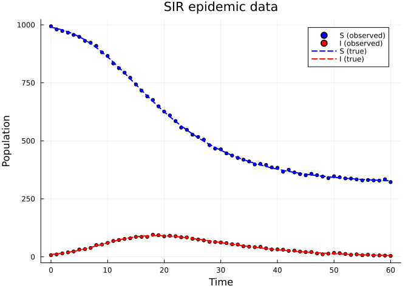
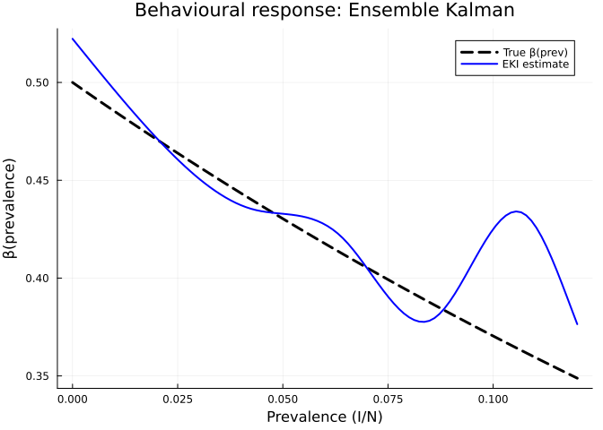
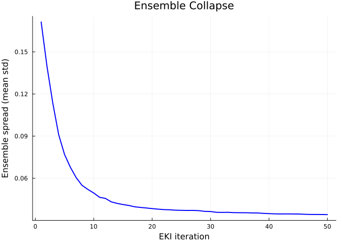
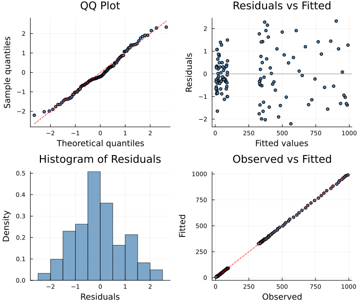

Ensemble Kalman Inversion: Derivative-Free Estimation
Overview
The EnsembleKalmanSolver implements Ensemble Kalman Inversion (EKI) — a derivative-free, ensemble-based method for parameter estimation. Unlike gradient-based methods (LAML, Adam), EKI maintains a population of parameter particles and iteratively updates them using the Kalman gain computed from ensemble statistics.
When to use EnsembleKalmanSolver:
- The forward model is non-differentiable, stiff, or computationally opaque
- Gradient-based methods fail to converge
- You want a method that naturally provides ensemble-based uncertainty estimates
- You’re working with complex models where autodiff is impractical
Setup
using PartiallySpecifiedModels
using PartiallySpecifiedModels: solve
using OrdinaryDiffEq
using Plots
using Random
Random.seed!(42)TaskLocalRNG()Example: SIR Model with Behavioural Response
We fit an SIR epidemic model where the transmission rate depends on prevalence via an unknown behavioural response $\beta(\text{prev})$:
\[\frac{dS}{dt} = -\beta(I/N)\,\frac{SI}{N}, \quad \frac{dI}{dt} = \beta(I/N)\,\frac{SI}{N} - \gamma I, \quad \frac{dR}{dt} = \gamma I\]
The true response is $\beta(\text{prev}) = 0.5\exp(-3\,\text{prev})$ — people reduce contact as prevalence rises.
function sir!(du, u, p, t)
S, I, R = u
N = S + I + R
prev = I / N
β_val = p.β(prev)
foi = max(β_val, 0.001) * S * I / N
du[1] = -foi
du[2] = foi - 0.25 * I
du[3] = 0.25 * I
end
β_true(prev) = 0.5 * exp(-3.0 * prev)
function sir_true!(du, u, p, t)
S, I, R = u
N = S + I + R
prev = I / N
β = 0.5 * exp(-3.0 * prev)
du[1] = -β * S * I / N
du[2] = β * S * I / N - 0.25 * I
du[3] = 0.25 * I
end
u0 = [990.0, 10.0, 0.0]
sol_sir = OrdinaryDiffEq.solve(
ODEProblem(sir_true!, u0, (0.0, 60.0)),
Tsit5(); saveat=1.0)
t_data = collect(sol_sir.t)
rng = Random.Xoshiro(42)
data_sir = max.(hcat(
[sol_sir.u[i][1] + 5.0*randn(rng) for i in 1:length(t_data)],
[sol_sir.u[i][2] + 2.0*randn(rng) for i in 1:length(t_data)]), 0.01)
p_data = scatter(t_data, data_sir[:, 1], label="S (observed)", ms=3, color=:blue)
scatter!(p_data, t_data, data_sir[:, 2], label="I (observed)", ms=3, color=:red)
plot!(p_data, sol_sir.t, [sol_sir.u[i][1] for i in 1:length(sol_sir.t)],
label="S (true)", lw=2, ls=:dash, color=:blue)
plot!(p_data, sol_sir.t, [sol_sir.u[i][2] for i in 1:length(sol_sir.t)],
label="I (true)", lw=2, ls=:dash, color=:red)
plot!(p_data, xlabel="Time", ylabel="Population", title="SIR epidemic data")
Fit with EKI
approx_β = BSplineApproximator(:β, (0.0, 0.15), 8; initial=0.4)
prob = PSMProblem(sir!, u0, (0.0, 60.0), [approx_β];
data_times=t_data, data_values=data_sir,
obs_to_state=[1, 2], known_params=(γ=0.25,),
likelihood=PartiallySpecifiedModels.Gaussian(), solver=Tsit5())
t_ek = @elapsed sol_ek = solve(prob,
EnsembleKalmanSolver(n_ensemble=100, n_iterations=50, noise_scale=5.0, verbose=true))
println("\nTime: $(round(t_ek, digits=1))s")EnsembleKalmanSolver: 100 particles, 50 iterations, 8 params
iter 1: misfit=21830.0 spread=0.1713
iter 2: misfit=1352.0 spread=0.1397
iter 3: misfit=471.1 spread=0.1134
iter 5: misfit=60.18 spread=0.07696
iter 10: misfit=13.39 spread=0.04951
iter 15: misfit=9.789 spread=0.0413
iter 20: misfit=9.57 spread=0.0384
iter 25: misfit=9.562 spread=0.03717
iter 30: misfit=9.56 spread=0.03631
iter 35: misfit=9.556 spread=0.03548
iter 40: misfit=9.554 spread=0.03483
iter 45: misfit=9.554 spread=0.03454
iter 50: misfit=9.553 spread=0.03413
Time: 3.8sRecovered behavioural response
prev_grid = range(0.0, 0.12, length=100)
β_true_vals = [β_true(p) for p in prev_grid]
β_ek_vals = [sol_ek.unknown_functions[:β](p) for p in prev_grid]
plot(prev_grid, β_true_vals, label="True β(prev)", lw=3, color=:black, ls=:dash,
xlabel="Prevalence (I/N)", ylabel="β(prevalence)",
title="Behavioural response: Ensemble Kalman")
plot!(prev_grid, β_ek_vals, label="EKI estimate", lw=2, color=:blue)
Ensemble spread convergence
spread = sol_ek.convergence.ensemble_spread
plot(1:length(spread), spread, lw=2, color=:blue,
xlabel="EKI iteration", ylabel="Ensemble spread (mean std)",
title="Ensemble Collapse", legend=false)
[!NOTE]
The ensemble spread decreases over iterations as the particles converge toward the optimal parameters. The rate of collapse depends on the signal-to-noise ratio and ensemble size.
Ensemble-based uncertainty
The final ensemble standard deviation provides a rough measure of parameter uncertainty:
Ensemble parameter std (per coefficient):
β_1: std = 0.02
β_2: std = 0.00284
β_3: std = 0.0024
β_4: std = 0.00152
β_5: std = 0.0007
β_6: std = 0.0266
β_7: std = 0.106
β_8: std = 0.113Diagnostic Plots
using PartiallySpecifiedModels: appraise
diag = appraise(sol_ek)
p_qq = scatter(diag.qq_theoretical, diag.qq_sample,
xlabel="Theoretical quantiles", ylabel="Sample quantiles",
title="QQ Plot", ms=3, legend=false, color=:steelblue)
mn, mx = extrema(vcat(diag.qq_theoretical, diag.qq_sample))
plot!(p_qq, [mn, mx], [mn, mx], color=:red, ls=:dash)
p_rf = scatter(diag.fitted, diag.residuals,
xlabel="Fitted values", ylabel="Residuals",
title="Residuals vs Fitted", ms=3, legend=false, color=:steelblue)
hline!(p_rf, [0], color=:gray, ls=:dot)
p_hist = histogram(diag.residuals, normalize=:pdf,
xlabel="Residuals", ylabel="Density",
title="Histogram of Residuals", legend=false, color=:steelblue, alpha=0.7)
p_of = scatter(diag.observed, diag.fitted,
xlabel="Observed", ylabel="Fitted",
title="Observed vs Fitted", ms=3, legend=false, color=:steelblue)
mn2, mx2 = extrema(vcat(diag.observed, diag.fitted))
plot!(p_of, [mn2, mx2], [mn2, mx2], color=:red, ls=:dash)
plot(p_qq, p_rf, p_hist, p_of, layout=(2, 2), size=(700, 600))
How It Works
EKI maintains an ensemble $\{\theta^{(j)}\}_{j=1}^J$ of parameter particles:
- Predict: Evaluate the forward model $G(\theta^{(j)})$ for each particle
- Update: Compute the Kalman gain $K = C_{\theta G}(C_{GG} + \Gamma)^{-1}$
- Step: $\theta^{(j)}_{n+1} = \theta^{(j)}_n + K(y + \xi^{(j)} - G(\theta^{(j)}_n))$
where $\Gamma = \sigma^2 I$ is the observation noise covariance and $\xi^{(j)}$ are perturbation samples. The ensemble gradually collapses to the posterior mode.
References
- Iglesias, M.A., Law, K.J.H. & Stuart, A.M. (2013). Ensemble Kalman methods for inverse problems. Inverse Problems, 29(4).
- Schillings, C. & Stuart, A.M. (2017). Analysis of the ensemble Kalman filter for inverse problems. SIAM J. Numer. Anal., 55(3).